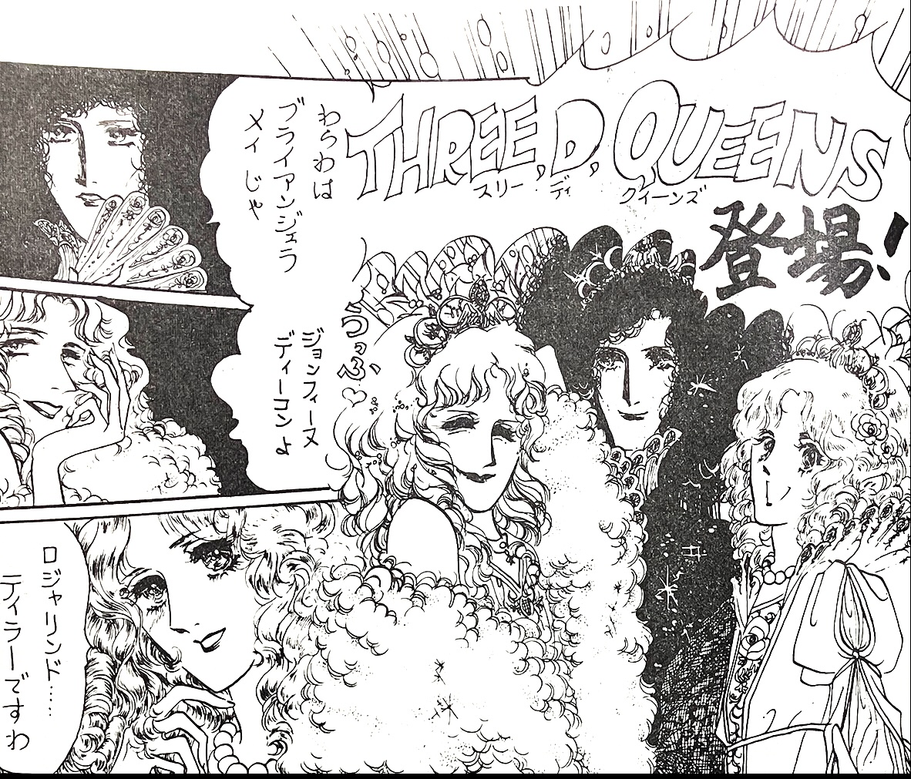
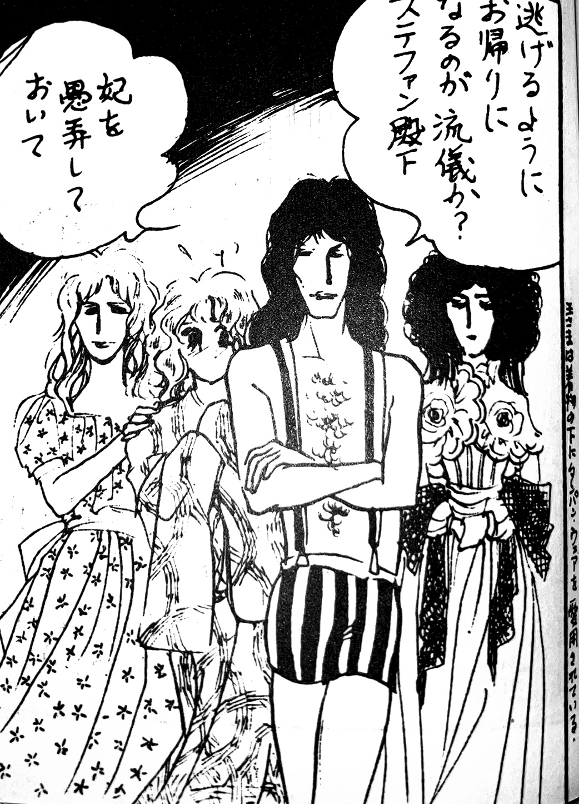
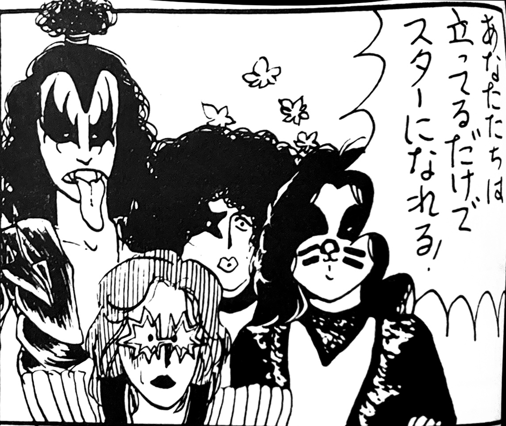
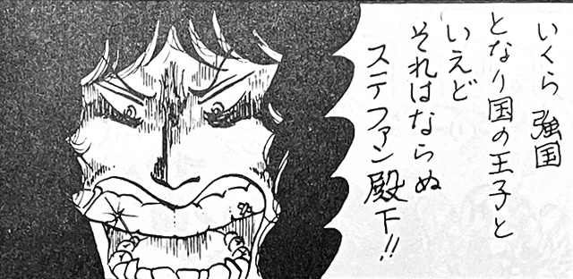
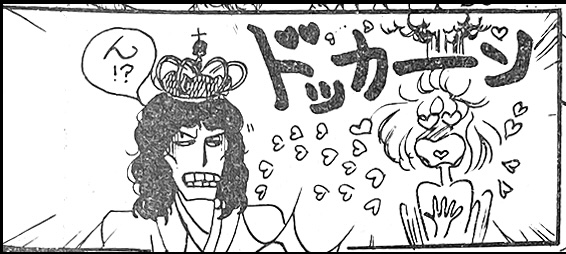
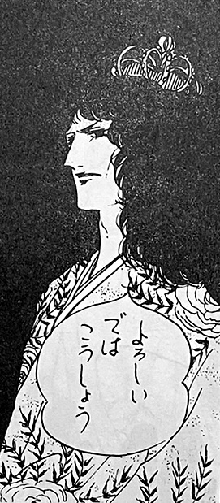
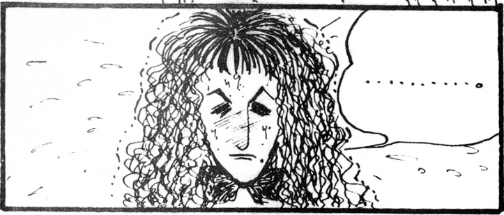

Peace Rooster is a fairly thick doujinshi that's a product of an alliance between two different rock doujinshi groups, Atomic Rooster and Peace Breaker. It was published in October of 1976 and contains stories about many different rock bands and artists of the time, including KISS, Todd Rundgren, Emerson Lake & Palmer, Deep Purple, Marc Bolan, and of course Queen. There's also a parody of the anime Dino Mech Gaiking. One of the main artists of Atomic Rooster, who goes by the penname "Salad Queen", has works that can be found in Manken Queen as well.
The story containing Queen is a zany fantasy romance called "Ogre Battle and the White Queen". Drawn by "Yuuri Mercury", it involves the members of KISS as the Ogres and the members of Queen as royal princesses (speaking feminine Japanese) in the fairytale land of Rhye.

The Three D Queens appear: Johnfina, Briangela, and Rogalind.

The Queens of Rhye.

The Ogres.

Freddie's angry.

Freddie's jealous.


John Deacon also makes a cameo in a story that's mainly about Emerson Lake & Palmer.